Favorite TV Shows!
Below you will find a table of some of my favorite TV shows. Each title has a link to it's Wikipedia page, if you're interested in learning more about them!
| Title | Description | Favorite Character |
|---|---|---|
| 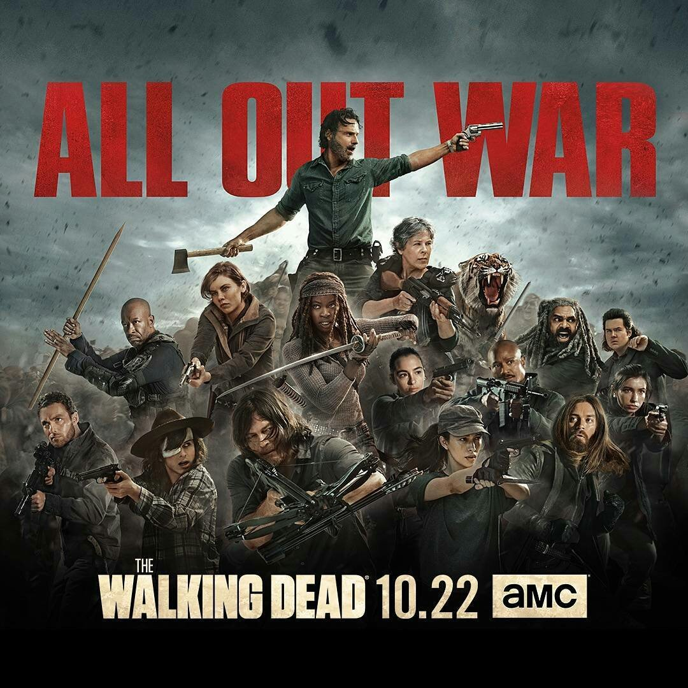The Walking Dead | "The Walking Dead takes place after the onset of a worldwide zombie apocalypse." "The series centers on sheriff's deputy Rick Grimes, who wakes up from a coma to discover this apocalypse. He becomes the leader of a group of survivors from the Atlanta, Georgia region as they attempt to sustain themselves and protect themselves not only against attacks by walkers but by other groups of survivors willing to assure their longevity by any means necessary." ~Wikipedia |
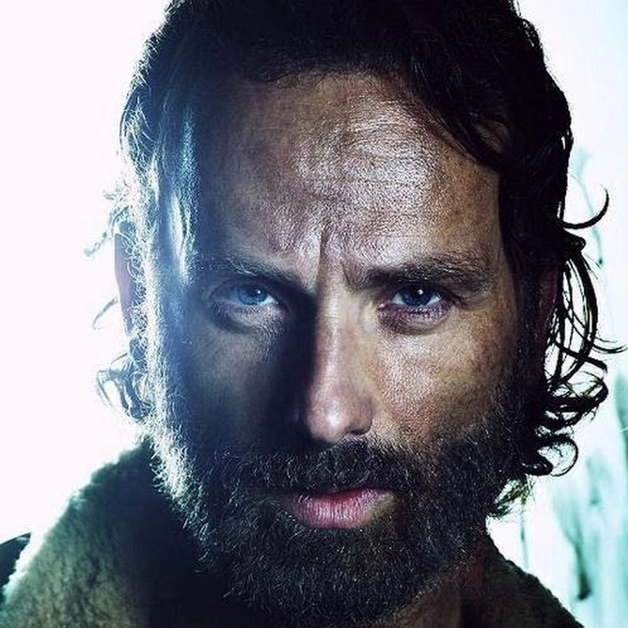 Rick Grimes |
| 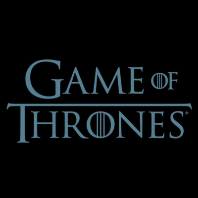Game of Thrones | "Game of Thrones is roughly based on the storylines of A Song of Ice and Fire,[2][3] set in the fictional Seven Kingdoms of Westeros and the continent of Essos. The series chronicles the violent dynastic struggles among the realm's noble families for the Iron Throne, while other families fight for independence from it. It opens with additional threats in the icy North and Essos in the east." ~Wikipedia |
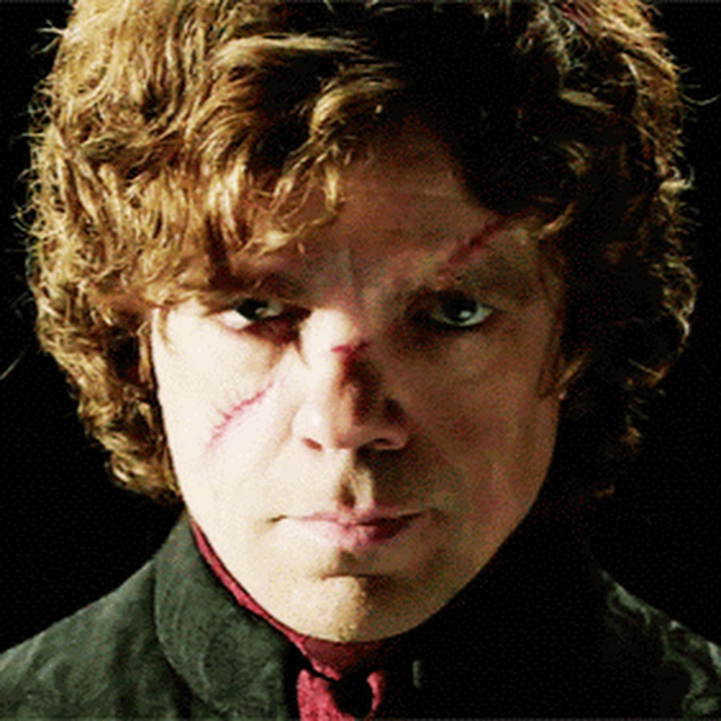 Tyrion Lannister |
| 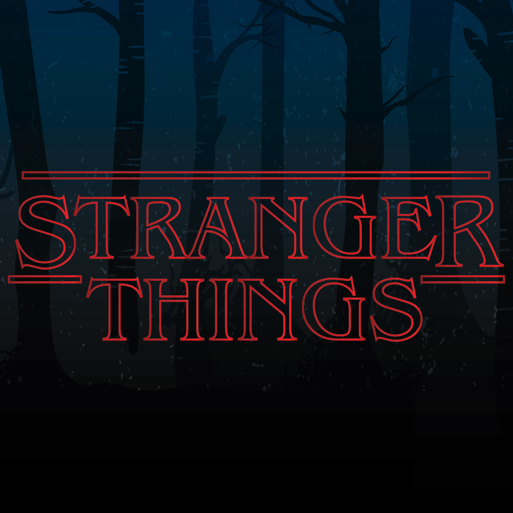Stranger Things | "Stranger Things is set in the fictional rural town of Hawkins, Indiana, during the early 1980s. The nearby Hawkins National Laboratory ostensibly performs scientific research for the United States Department of Energy, but secretly does experiments into the paranormal and supernatural, including those that involve human test subjects. Inadvertently, they have created a portal to an alternate dimension called "the Upside Down". The influence of the Upside Down starts to affect the unknowing residents of Hawkins in calamitous ways." ~Wikipedia |
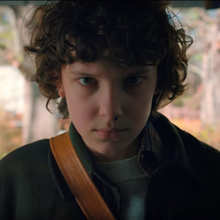 Jane Ives (Eleven) |
| 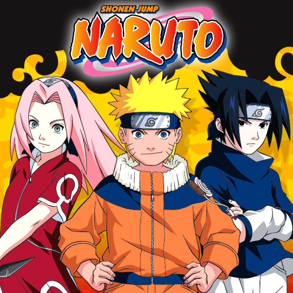Naruto | "Naruto (ナルト) is a Japanese manga series written and illustrated by Masashi Kishimoto. It tells the story of Naruto Uzumaki, an adolescent ninja who searches for recognition and dreams of becoming the Hokage, the leader of his village." ~Wikipedia |
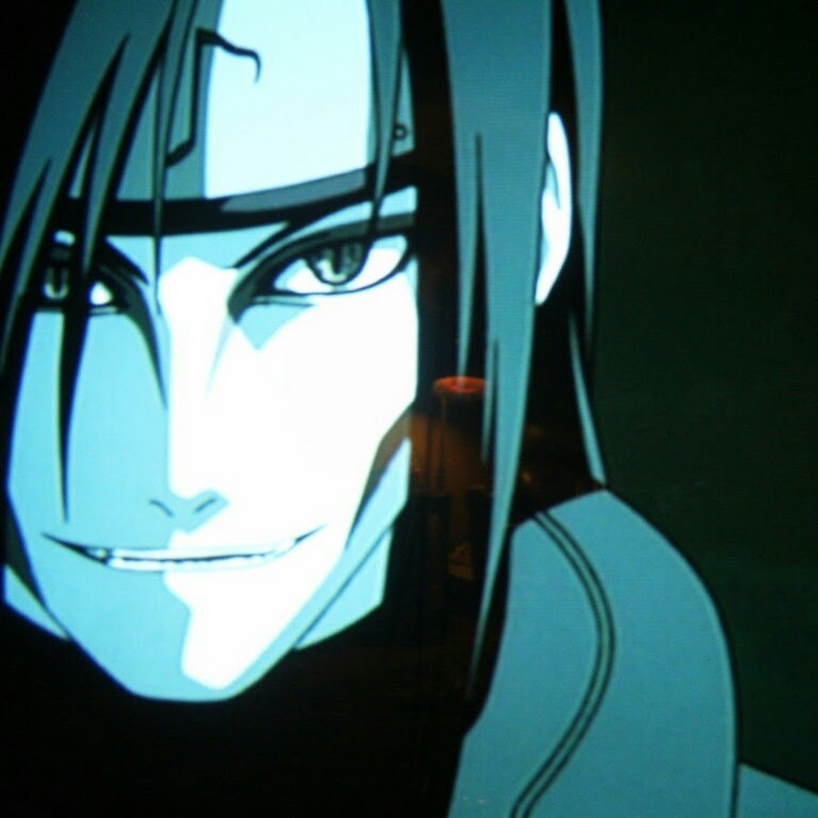 Orochimaru |
 Fullmetal Alchemist Fullmetal Alchemist |
"Set in a fictional universe in which alchemy is one of the most advanced scientific techniques, the story follows two alchemist brothers named Edward and Alphonse Elric, who are searching for the philosopher's stone to restore their bodies after a failed attempt to bring their mother back to life using alchemy." ~Wikipedia |
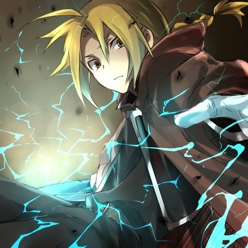 Edward Elric |
| 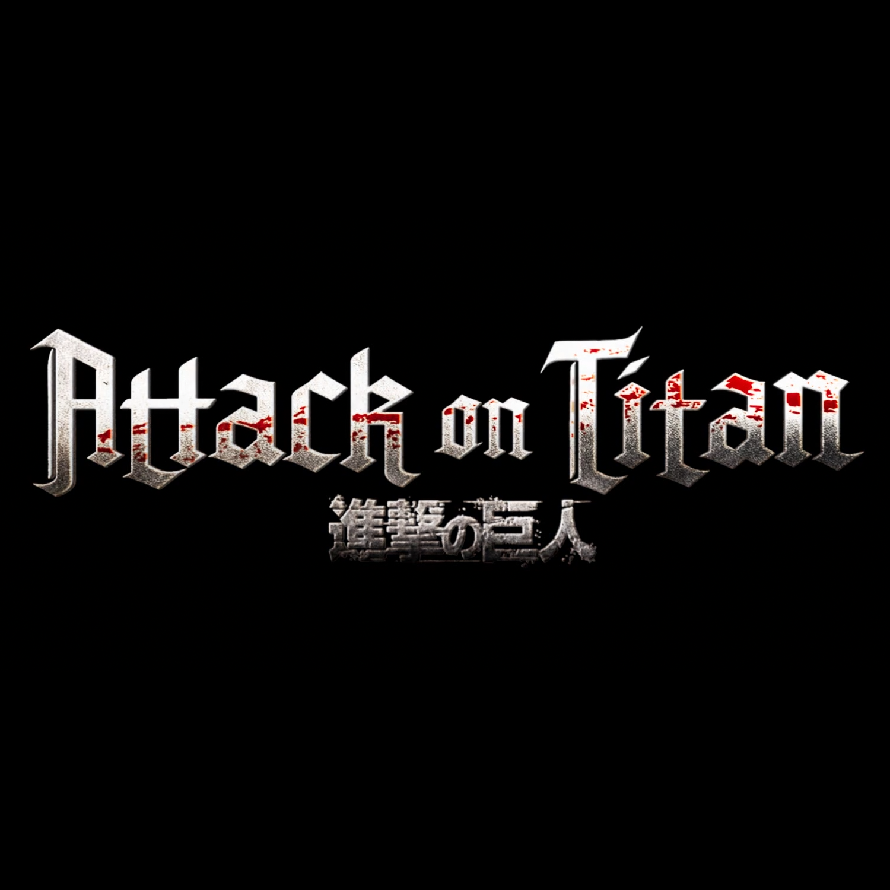Attack on Titan | "It is set in a world where humanity lives in cities surrounded by enormous walls; a defense against the Titans, gigantic humanoids that eat humans seemingly without reason. The story initially centers on Eren Yeager and his childhood friends Mikasa Ackerman and Armin Arlert, who join the military to fight the Titans after their hometown is invaded and Eren's mother is eaten and Eren swears to avenge her. However, as the story progresses and the truths about the Titans are slowly revealed to the reader, the narrative shifts to encompass Historia Reiss, squad leader Levi, Eren's father Grisha, and other supporting characters." ~Wikipedia |
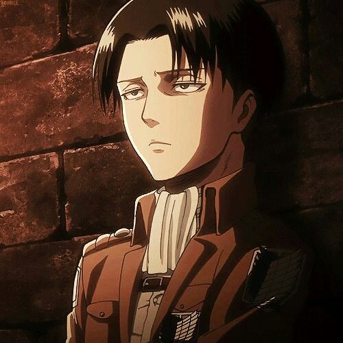 Levi Ackerman |